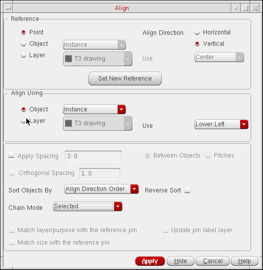
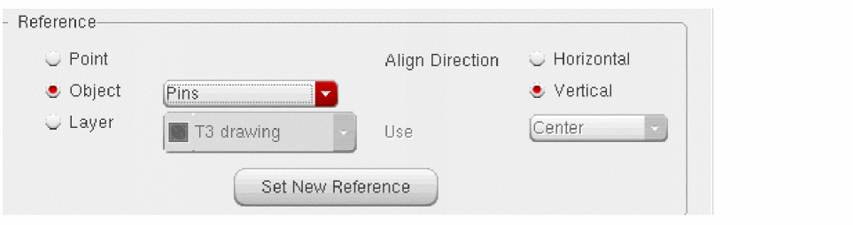
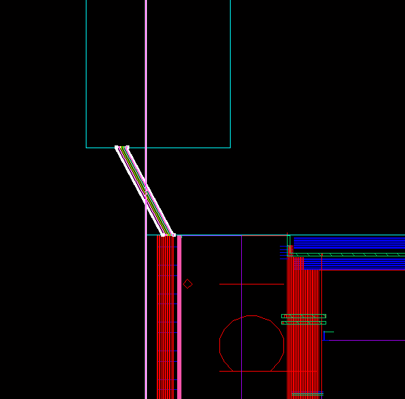
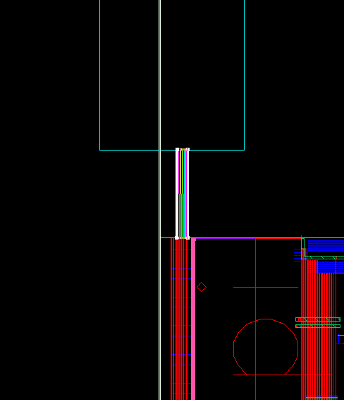
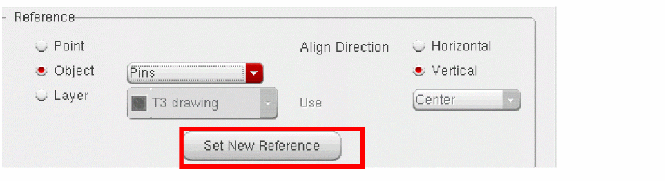
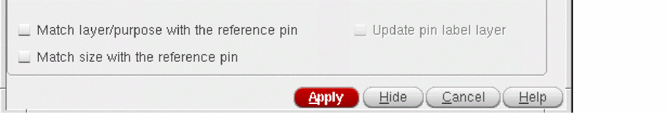

Aligning Pins
Use the Edit - Advanced - Align command to align pins. Alternatively, you can use the
To align pins, perform the following steps:
-
Choose the Edit – Advanced - Align command. The Align form is displayed.
 -
Select the Object option in the Reference section. Select Pins from the field next to the Object option.
The following prompt appears:Select reference pins/instances/top-level PRBoundary for pin-alignment:
-
To select the reference pins, click the corresponding blocks. You can select multiple blocks such as the top-level PR boundary, a soft block, or a hard block as reference blocks. The pins in these blocks are selected as the reference pins.
You can select pins in different reference blocks as the reference pins. The pins in the target block will be aligned with respect to these reference pins in different reference blocks. -
Click the middle mouse button to switch to the target selection mode. A new message prompt appears:
Select target pins/instances/top-level PRBoundary for pin-alignment:
- To select the target pins, click the corresponding blocks.You can select multiple soft blocks, top-level pins, top-level PR boundary or soft-block pins.
-
Click the middle mouse button or the Apply button in the Align form to mark the end of target selection.
The pin aligner aligns the target pins with respect to the selected reference pins. The following message prompt is displayed:
Select target pins/instances/top-level PRBoundary for pin-alignment:
 -
You can now select another target object to align with the same reference.
You can also click the Set New Reference button on the Align form to specify a new reference for aligning objects. This command resets the form and enables you to start again by selecting a new reference.
 -
Select the Match layer/purpose with the reference pin check box to change the target pin layer/purpose of the pin to the reference pin layer purpose. For example, if the target pin is on Metal2 drawing layer purpose and the reference pin is on Metal1 drawing, then selecting this option will change the target pin layer to Metal1 drawing.
 -
When the Match layer/purpose with the reference pin option is selected, the Update pin label layer option is also selected by default. In this state, the pin labels are placed on the same layer as the target pins. So, when a pin is moved to a different layer, the pin label is also moved to the same layer.
However, this option will work only if the purposes of the reference and target pins match.
Example 1:
Reference pin LPP= (Metal1 drawing)
Target pin LPP = (Metal2 drawing) - exists
Pin label’s layer will be updated to the target layer along with the pin.
Example 2:
Reference pin LPP= (Metal1 drawing)
Target pin LPP = (Metal2 drawing) – X does not exist
Pin label’s layer will be not be updated. Only the pin layer will be updated. -
Select the Match size with the reference pin check box to change the target pin size to that of the reference pin. For example, if the target pin size is 0.6 x 0.6 and the reference pin size is 1.0 x 1.0 then selecting this option will change the target pin size to 0.6 x 0.6.
Related Topics
Return to top